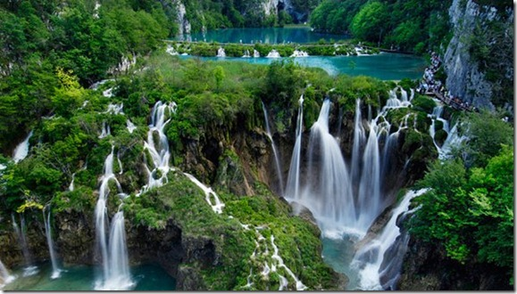

">

Reserva Natural.
Existe en Panajachel, un pequeño rincón al
que se accede dando un pequeño paseo desde el cerro del pueblo
cogiendo la calle principal, dirección Sololá y
tomando el desvio a mano izquierda pasando la gasolinera.
Es la Reserva Natural de Amatitlan , un antiguo cafetal
reconvertido en parque natural, sin demasiadas pretensiones, que da refugio a algunos animales, como aves,
mapaches y monos araña. El paseo está bien, ya que el sendero transcurre entre puentes colgantes, que te llevan
hasta una pequeña cascada, lo que lo hace batante atractivo y divertido.
Tambien tiene una pequeña playa, que da del lago y ofrece unas vistas maravillosas del volcán. Te puedes
bañar, y allí el agua es tranquila y cristalina. Dentro del parque hay un mariposario bastante destartalado, y
se puede hacer tirolina, por un modico precio.
La entrada al son Q45.00 (4,50 euros por persona, Noviembre de 2012). La tirolina no esta incluida en ese precio.
E un paseo relajante, para quellos que esén en Panajechel unos días, un buen lugar para darse un chapuzón alejado
de la playa pública junto al embarcadero.